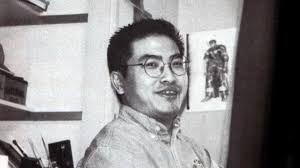
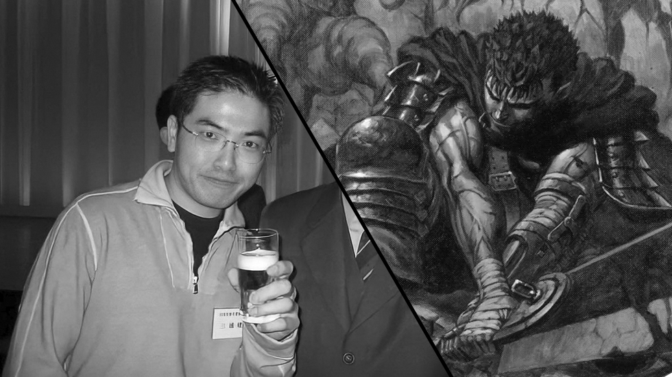
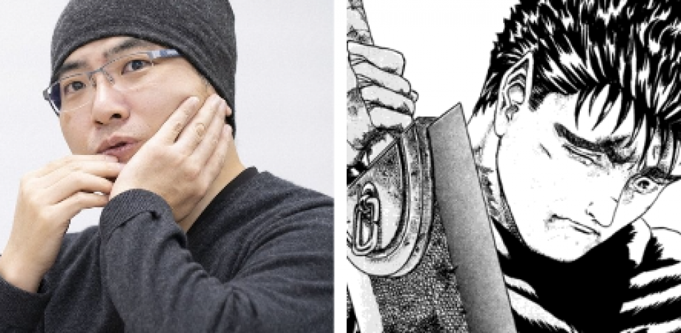
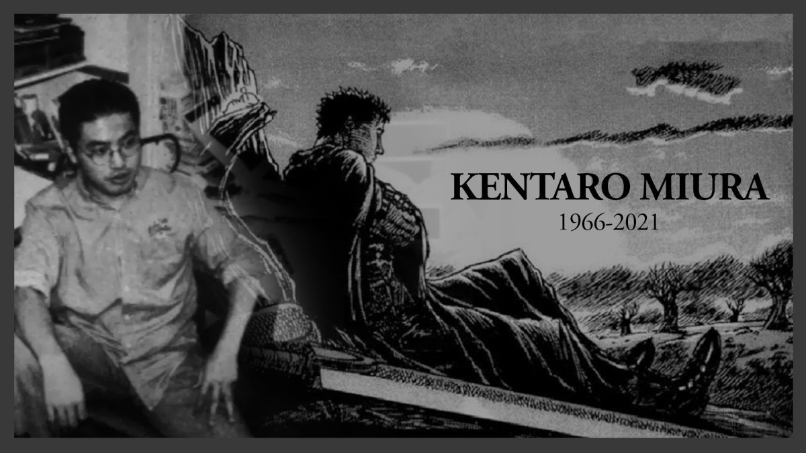

Kentaro Miura
Berserk nació el 11 de julio de 1966 en Chiba, Japón. Desde una edad temprana, mostró un talento excepcional para el dibujo. De hecho, Miura comenzó a dibujar su primer manga, titulado Miuranger, cuando tenía solo 10 años, y lo completó en 1976. Esta obra temprana, aunque rudimentaria, mostró su pasión por el arte secuencial, lo que lo llevó a continuar desarrollando sus habilidades a lo largo de su juventud.
Durante sus años de escuela secundaria, Miura continuó perfeccionando su estilo. En 1979, creó un manga llamado Ken e no Michi (El Camino de la Espada), que fue publicado en una revista escolar y le ganó reconocimiento entre sus compañeros. A medida que avanzaba en su carrera educativa, Miura ingresó a la Universidad de Artes de Nihon, donde estudió diseño gráfico. Allí, comenzó a trabajar en su primer manga profesional, Futanabi (1985), una historia corta que le valió una mención honorífica en el Premio de Manga de la revista Weekly Shonen.
En 1988, mientras aún era estudiante universitario, Miura publicó el primer prototipo de lo que se convertiría en su obra más célebre, Berserk. Esta historia corta, conocida como el Berserk Prototype, fue publicada en la revista Gekkan ComiComi y sirvió como el primer vistazo al mundo oscuro y medieval que definiría gran parte de su carrera. La publicación de este prototipo fue bien recibida y le permitió a Miura comenzar la serialización de Berserk en 1989 en la revista Young Animal, de la editorial Hakusensha.
Berserk sigue la historia de Guts, un mercenario que, armado con una gigantesca espada, recorre un mundo brutalmente realista inspirado en la Europa medieval, plagado de guerras, demonios y traiciones. La serie es famosa por su compleja trama, sus detallados personajes y su arte meticulosamente elaborado. Además, Berserk es conocido por su tratamiento de temas oscuros como la venganza, la lucha por el libre albedrío, y la naturaleza de la maldad, todo ello enmarcado en una narrativa que mezcla elementos de fantasía épica con horrores psicológicos.
El éxito de Berserk fue inmediato, y la serie rápidamente desarrolló una base de seguidores leales en Japón y en todo el mundo. Miura dedicaba una cantidad impresionante de tiempo y esfuerzo a cada capítulo, con ilustraciones que a menudo tomaban semanas en completarse debido a su atención al detalle. A pesar de los largos períodos entre publicaciones, el entusiasmo por Berserk nunca disminuyó, y la serie influyó profundamente en otros creadores de manga, anime, videojuegos, y literatura.
Además de Berserk, Miura trabajó en otros proyectos, aunque en menor medida. Entre sus obras adicionales destacan Japan (1992), una colaboración con el escritor Buronson, y Gigantomachia (2013), una miniserie ambientada en un mundo mitológico que exploraba nuevas temáticas y estilos artísticos. Sin embargo, Berserk siempre fue su principal enfoque, y Miura continuó trabajando en la serie hasta su fallecimiento.
Trágicamente, Kentaro Miura falleció el 6 de mayo de 2021 debido a una disección aórtica aguda. Su muerte fue un duro golpe para sus seguidores, ya que dejó la historia de Berserk inacabada. A pesar de su prematura partida, el legado de Miura sigue vivo. Berserk continúa siendo una de las obras más influyentes y veneradas en el mundo del manga y el anime, y su impacto se siente en numerosas obras de ficción contemporáneas. El trabajo de Miura es celebrado no solo por su complejidad narrativa y artística, sino también por su profunda exploración de la condición humana y las luchas existenciales.
En reconocimiento a su monumental contribución al manga, Miura ha sido homenajeado en numerosas ocasiones por colegas, fanáticos y críticos. Su influencia ha dejado una marca indeleble en la cultura pop y su obra continúa siendo objeto de estudio y admiración. Berserk, con su inquebrantable exploración de los temas más oscuros y profundos, asegura que el nombre de Kentaro Miura permanecerá en los anales de la historia del manga por generaciones venideras.